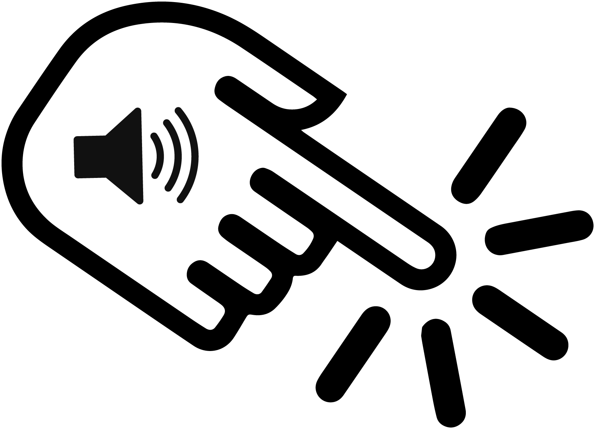
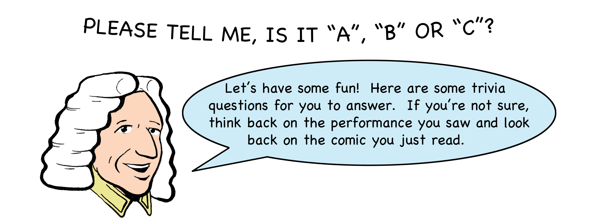

Click the page corners to turn the page.
Your browser does not support the audio element.

Your browser does not support the audio element.
Your browser does not support the audio element.
Your browser does not support the audio element.
Your browser does not support the audio element.
Your browser does not support the audio element.
Your browser does not support the audio element.
Your browser does not support the audio element.
Your browser does not support the audio element.
Your browser does not support the audio element.

Click on the correct response.
How many musical pieces did Bach compose?
a. 20
b. 5,000
c. 1,200
Feedback
A harpsichord has strings that are:
a. Hammered
b. Pulled
c. Plucked
Feedback
"Baroque"is a word that means:
a. Simple
b. Decorated
c. Broken
Feedback
The earliest musical instrument is:
a. Flute
b. Violin
c. Oboe
Feedback
The singer with the highest pitch is called:
a. Bass
b. Tenor
c. Soprano
Feedback
Which instrument makes sound by air blowing through pipes?
a. Piano
b. Organ
c. Harpsichord
Feedback
Take me to more activities!